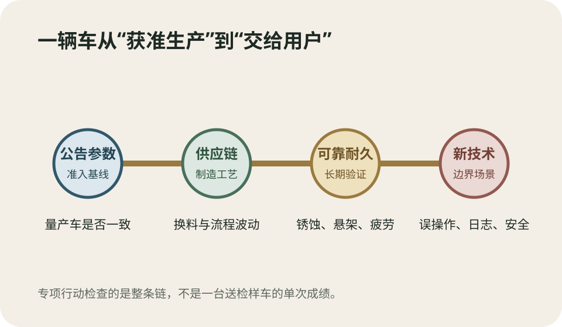
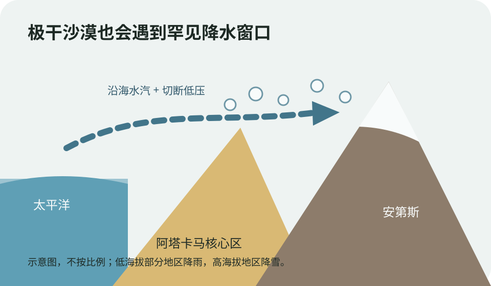
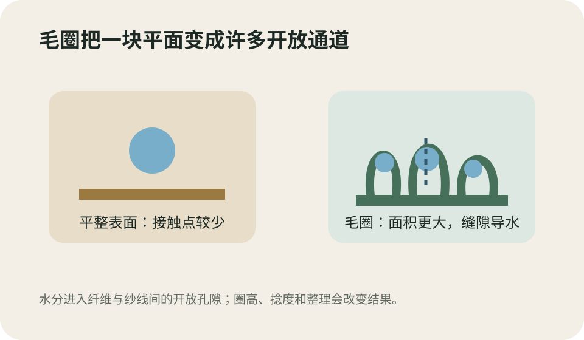
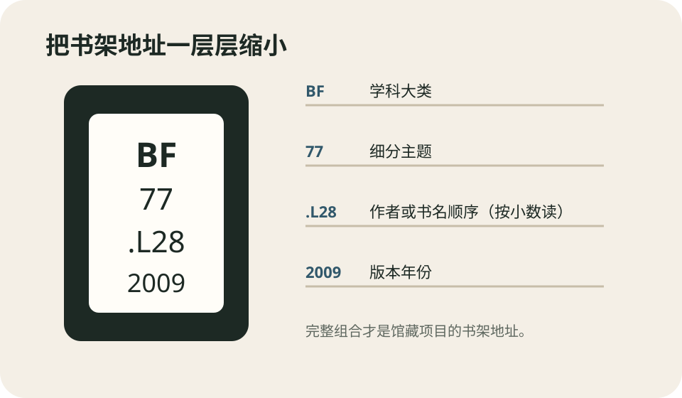

今日热点 01 · 消费 / 汽车安全
四部门启动一年车辆质量专项行动，量产车、耐久性和驾驶辅助都要查
工信部、公安部、生态环境部和市场监管总局8月27日宣布，即日起在全国开展为期一年的道路机动车辆产品质量专项行动。检查不只看送检样车是否过关，还要核对量产车与公告参数是否一致，追查锈蚀、悬架断裂、软件升级和驾驶辅助测试等问题。

专项行动把公告参数、量产一致性、耐久测试和新技术验证串成一条检查链。原创示意。
发生了什么
检查期为一年，车企须在12月底前报送自查情况
四部门发布的通知从8月27日起执行。属地工信部门将组织重点车企排查自身和关键零部件供应商，企业须在2026年12月底前报送自查自纠情况；发现缺陷时，要向市场监管总局备案召回计划并主动召回。
监管部门还会到生产企业、经销场所和检测机构检查，并抽取整车或关键零部件送检。问题严重时，可采取公开通报、暂停相关产品公告或强制性认证证书、不予办理车辆注册登记、罚款等措施。
生产一致性
送检样车合格还不够，消费者拿到的量产车也要保持同一标准
“生产一致性”核对的是量产车技术指标是否仍与准入公告参数和国家标准相符。它还覆盖原材料、零部件供应商、进货检验、制造工艺、设备和人员能力，防止样车通过后，批量生产因降本、换料或流程波动而偏离。
这项检查并不意味着市场上的车辆都存在问题，也不是一轮统一召回。它建立的是发现路径：先由企业排查，再由监管抽查；只有具体车型被确认存在缺陷或不符合标准时，才进入召回或行政处置。
新技术也在范围内
驾驶辅助不能只在理想路况演示，还要评估误操作与极端场景
通知要求检查组合驾驶辅助和自动驾驶功能的测试是否充分，也要看云端平台的数据、网络和人工智能安全防护，以及事故调查所需日志是否完整。新设计还须评估用户习惯、误操作和极端使用场景，营销宣传要与实际能力相符。
消费者更容易接触到的是功能名和演示视频，监管关心的则是边界条件有没有被测试、更新后是否仍安全、出事后能否还原过程。接下来可看抽查车型、典型案例和召回备案，而不是把“开展专项行动”直接等同于已有处罚结果。
专项行动查的是量产车与准入参数是否一致、产品能否可靠耐用，以及驾驶辅助等新技术是否经过充分验证；它不是对所有车辆的统一召回。
查看事实与延伸来源
工业和信息化部：专项行动全文、检查范围与处置措施
新华社：可靠性、耐久性和新技术测试验证要点
中国汽车工业协会：行业倡议与创新设计验证边界
Reuters：自查发现缺陷后的召回要求与监管背景
今日热点 02 · 文化 / 当代艺术
草间弥生逝世，享年97岁；她在8月14日离世，消息27日公布
草间弥生美术馆和基金会8月27日宣布，这位日本艺术家已于8月14日在东京一家医院去世，享年97岁。官方公告没有说明死因。圆点、无限网和镜屋是她最易辨认的语言，但她的创作还包括行为、雕塑、小说和诗歌。
日期先分清
离世发生在14日，公众得知消息是在27日
草间弥生美术馆发布的公告确认，她8月14日在东京一家医院去世，享年97岁；工作室和基金会到27日才向公众公布。美联社依据工作室声明报道了同一日期，官方没有公布死因。
讣告常有“去世日期”和“公布日期”两条时间线。今天成为新闻的是家属与机构对外确认，不应把27日误写成离世日，也不应根据高龄或长期住院替官方补写死因。
她怎样工作
圆点不是唯一主题，重复本身才是她长期使用的方法
草间弥生从绘画中的“无限网”出发，把重复单元扩展到软雕塑、南瓜、行为和镜面装置。镜屋利用反射把有限空间复制成似乎没有尽头的视野；圆点则能覆盖画布、物体、身体和整个房间。
这些形式容易被压缩成适合拍照的视觉标签，但她早在社交媒体出现前几十年已经使用重复与沉浸。官方生平也列出小说和诗歌，因此只用“圆点艺术家”概括她，会漏掉媒介跨度和长期写作。
为什么影响这么大
她把个人视觉经验做成观众可以走进去的空间
美联社回顾，她1957年前往美国，后来在纽约参与前卫艺术实践；作品进入绘画、雕塑和公共表演。晚年的镜屋让观众从观看一件作品，变成进入由光、镜面和重复图案构成的环境。
这种可进入性扩大了受众，也带来排队、限时参观和“只顾拍照”的争论。两面并不冲突：作品既能在手机时代迅速传播，也有一条早于手机的创作脉络。理解她，最好把传播方式和作品形成时间分开。
草间弥生8月14日在东京去世，27日由其机构公布，官方未说明死因；圆点只是入口，重复、沉浸空间和跨媒介创作贯穿她数十年工作。
查看事实与延伸来源
草间弥生美术馆：离世日期、年龄与创作范围
美联社：工作室确认、纽约经历与作品回顾
Museum Ludwig：2026回顾展与跨时期作品资料
今日热点 03 · 国际 / 极端天气
阿塔卡马沙漠出现罕见大范围降雪，雪带从安第斯延伸到近太平洋海岸
NASA地球观测站8月27日发布卫星资料：智利北部8月接连受冬季风暴影响，阿塔卡马部分地区被雪覆盖；8月19日影像显示，雪从安第斯山脉越过沙漠极干核心区，延伸到安托法加斯塔以南、接近太平洋海岸。

高空切断低压与沿海水汽共同把降水带推过阿塔卡马。原创示意，不按比例。
卫星看见什么
两轮风暴把雪覆盖范围推到沙漠核心区和近海岸
Landsat 8和9记录了8月6日与14日前后的变化，Terra卫星的MODIS仪器又在19日拍到更大范围积雪。NASA称，阿塔卡马过去也下过雪，包括2025年和2011年的事件，但这一次覆盖范围格外广。
高海拔查南托平台上的ALMA射电望远镜阵列因降雪和强风暂停运行，把天线转入保护模式。沿岸低海拔部分地区下的是雨；塔尔塔尔三天累计接近40毫米，约为当地年平均雨量的十倍。
为什么沙漠会下雪
极干不等于永不降水，关键是水汽能否遇到抬升和低温
阿塔卡马长期干燥，受副热带高压、寒冷的秘鲁—智利沿岸海流和安第斯雨影共同影响。正常情况下，湿空气很难深入沙漠核心；一旦大尺度环流把水汽送进来，高海拔地区仍能形成降雪。
NASA援引智利大学大气科学家解释，8月后半程的风暴与一个从西风急流脱离的切断低压有关。它又从横跨南半球广大区域的低压槽分离出来，配合充足沿海水汽，才形成跨越海岸、沙漠与山地的宽广降水带。
不能从一次事件推出什么
罕见降雪不等于沙漠变湿，也不能单独证明长期趋势
一场覆盖广的风暴说明当时天气系统异常有利于降水，却不能据此判断阿塔卡马已经转为湿润气候。气候结论需要更长时间序列，比较降水频率、强度和环流背景，而不是只看一张白色卫星图。
这次事件的现实影响也不只在“沙漠下雪”的反差。智利北部部分地区出现泥石流和山洪，数千人受影响、数百栋住宅严重受损。雪景与灾害来自同一组水汽和环流条件，不能只保留前者。
阿塔卡马极干但并非永不降水；这次切断低压与沿海水汽让降雪范围异常宽广。一次风暴不能证明沙漠气候已经转变。
查看事实与延伸来源
NASA地球观测站：卫星影像、降雪范围与天气机制
美国国家气象局：切断低压的定义
智利国家防灾应急服务：阿塔卡马地区灾害信息入口
NOAA气候预测中心：厄尔尼诺与南方涛动监测
涉猎 01 · 日用品 / 纺织
毛巾为什么织出一层层毛圈：它在增加接触面积，也在给水留通道
常见毛巾使用毛圈织物：底布负责稳定，额外的经纱在表面形成许多圈。毛圈把更多纱线暴露给水，纤维和纱线间隙再靠润湿与毛细作用把水带走，所以同样一块布能更快接触并容纳水分。

毛圈增加纱线表面积和纤维间通道；吸水还取决于纤维、捻度与整理。原创示意。
毛圈怎样织出来
底经把布织稳，毛经被多送出一段形成圈
毛圈布通常需要两组经纱。地经与纬纱构成稳定底布，毛经在织造时以不同送纱量被推成凸出表面的圈。双面毛巾让两面都有毛圈，因此不必先辨正反面才能擦水。
这些圈不是后期粘上去的绒。它们与底布一起织成，受到摩擦、拉扯和洗涤时仍能保持结构；勾到尖物后，单个毛圈也可能被拉长，所以毛巾不适合与带钩五金混洗。
水怎样进去
更多表面积先接住水，纤维间小缝再把水往里带
毛圈把一段纱线从平面抬起来，显著增加与皮肤或水滴接触的面积。水润湿亲水纤维后，会进入纤维与纱线之间的细小空隙；这些缝隙形成毛细通道，把水从接触点继续带开。
“像小海绵”是好用的比喻，但毛巾并没有一颗颗封闭海绵。它主要把水存在纤维内部和开放孔隙里，因此拧压时水能被排出，展开后又能继续吸。
厚软不等于都一样
圈高、捻度、纤维和后整理共同决定手感与吸水
较长、较松捻的毛圈通常有更多开放空间，摸起来柔软，也容易吸水；高捻纱更结实，触感可能偏硬。棉纤维本身亲水且湿态强度较好，是浴巾常用材料，但不同纤维混纺会改变干燥速度和耐用性。
新毛巾若残留柔软整理剂，初次吸水可能不理想；日常洗涤中过量使用织物柔顺剂，也可能在纤维表面留下疏水膜。判断一条毛巾，不能只看克重或“纯棉”两个字，还要看毛圈结构和实际整理。
毛巾毛圈通过增加接触面积和纤维间毛细通道吸水；圈高、纱线捻度、纤维与后整理都会改变吸水、柔软和耐用之间的取舍。
查看事实与延伸来源
美国国家棉花委员会：毛圈、棉纤维与吸水性
北卡罗来纳州立大学纺织期刊：毛圈形态与吸水研究综述
麻省理工学院纺织课程：毛圈织物结构与用途
涉猎 02 · 音乐 / 礼仪史
古典音乐会为什么常等整部作品结束再鼓掌：这条礼仪其实并不古老
交响曲、协奏曲常由多个乐章组成。今天许多音乐厅建议乐章间保持安静，等整部作品结束再鼓掌；但19世纪末以前，观众在单个乐章后鼓掌甚至要求返场并不少见。现在的安静习惯是后来形成的演出规范。
先认清“乐章”
音乐停了一次，不一定表示作品已经结束
一部交响曲或协奏曲可以分成几个速度、调性和性格不同的乐章，节目单通常会列出它们。乐章之间可能留几秒，让演奏者翻页、调整或准备下一段；也有作品让两个乐章不间断连接。
所以现场出现静默时，最稳妥的判断是看指挥，不必自己数秒。指挥仍保持手臂与注意力，通常表示作品继续；放下手臂并转向观众，才是结束信号。
礼仪怎样变化
早期观众会在乐章后回应，安静聆听后来才占上风
Lansing交响乐团的观演指南提到，直到19世纪末、甚至进入20世纪，乐章结束后鼓掌都很常见，受欢迎的乐章还可能立即重演。掌声既是评价，也会影响当晚演出次序。
后来，音乐会更强调一部多乐章作品的整体连续性。音乐厅把中途不鼓掌解释为保护表演者专注和乐章间的情绪衔接。这种习惯没有给听法判定唯一答案，它记录了观众角色和作品观念的共同变化。
今天怎么做
看节目单和指挥即可，不必把误拍一次当成失礼事故
第一次听某部作品时，可以先看节目单列出的乐章数；不确定就等指挥转身或跟随全场。碰到连续演奏的乐章，指挥和乐手通常不会彻底放松，下一段会很快开始。
各乐团态度也在变。皇家爱乐乐团明确说，越来越多观众会在乐章间鼓掌；一些乐团仍建议等到全曲结束。掌声本来就是回应，具体场合的习惯比一条脱离语境的硬规则更有用。
乐章间不鼓掌是近现代音乐会形成的惯例，早期观众常在乐章后回应。今天不确定时看节目单和指挥即可，不必因一次掌声把音乐会变成礼仪考试。
查看事实与延伸来源
Lansing交响乐团：乐章、历史习惯与现场判断方法
西班牙国家管弦乐团与合唱团：现行鼓掌建议
皇家爱乐乐团：当代观众行为与返场说明
马克斯·普朗克经验美学研究所：掌声的社会角色研究
涉猎 03 · 图书馆 / 分类制度
图书馆索书号为什么又有字母又有小数：它既要分主题，也要排到具体书
以美国国会图书馆分类法为例，书脊上的索书号不是随机编号。开头字母和整数把书放进学科及细分主题，后面的字母数字把同一主题下的作者或书名排开，年份再区分版本。它既是分类，也是书架地址。

索书号从主题逐层缩小到具体版本；其中Cutter号码按小数读取。原创示意。
第一段先分主题
字母表示大类，后续整数把学科继续切细
美国国会图书馆分类法在19世纪末至20世纪初形成，用字母表示广泛学科，再用更多字母和整数细分。例如N是美术，NA是建筑，NB是雕塑；分类表会随着新主题出现而持续修订。
这使相关书籍能够相邻摆放。读者找到一本合适的书后，沿同一排浏览，往往能遇到相近主题的其他版本或研究。索书号告诉你“在哪里”，也在书架上建立知识邻里。
后半段排具体书
Cutter号码把作者或书名转成字母加小数
同一细分主题下会有很多书，需要继续排序。Cutter号码通常用一个字母加若干数字代表作者、书名、地点或更细主题；数字按小数读，所以 .B3593 会排在 .B39 前面，而不是把3593当成更大的整数。
国会图书馆培训资料把完整索书号拆成分类号、书号和附加信息。书号常用于按作者排列，最后的年份可区分不同版本。几行字符合在一起，才唯一指向馆藏中的具体项目。
它与ISBN不同
ISBN识别出版物版本，索书号决定这家馆把它放在哪里
ISBN主要服务出版和发行，同一标题的精装、平装、电子版或不同版本可能有不同ISBN。索书号面向馆藏组织：图书馆依据所用分类法和本馆排架需要，为实体项目确定位置。
不同图书馆可能采用国会图书馆分类法、杜威十进分类法或自建体系，同一本书的索书号不一定完全相同。找书时应抄本馆目录里的索书号，而不是拿ISBN到书架上顺着数字寻找。
索书号先用分类号聚合同主题，再用Cutter号码、年份等把具体书排开；它是本馆的书架地址，不等于出版发行用的ISBN。
查看事实与延伸来源
美国国会图书馆：分类与排架体系概览
美国国会图书馆培训：分类号、Cutter号与完整索书号
内华达大学拉斯维加斯分校图书馆：逐行读取索书号
“知人者智，自知者明。胜人者有力，自胜者强。”
老子《道德经·第三十三章》（约公元前4世纪）
这一章把识人和自知、胜人和自胜分别并列。看懂别人需要判断力，看清自己的欲望、能力与偏差则更难；压过别人可以依靠外力，约束自己要靠持续的内在功夫。这里的“强”不是声量或控制欲，而是人在诱惑、恐惧和习惯面前仍能调整行为。它把力量的尺度从外部输赢移回了自我治理。
核对原文与语境
“文章千古事，得失寸心知。”
杜甫《偶题》（唐代）
杜甫在诗中回望历代文章与自己的创作处境。“千古事”说作品会进入比作者寿命更长的评价过程；“寸心知”又把判断收回写作者内心。外界名声可能迟到，也可能误读，作者却必须最先面对每个取舍是否准确。它不是自负的宣言，而是提醒写作同时承担公共时间和私人尺度。
核对原文与语境
“观察显示事实，实验则教我们怎样理解事实。”
克洛德·贝尔纳《实验医学研究导论》（1865） · 本刊译
贝尔纳区分了看见现象与从比较中取得知识。观察可以准确记录体温、症状或反应，实验则主动改变条件，再用对照判断哪些因素真正造成差异。两者不是高低关系：实验若没有可靠观察，只会制造噪声；观察若不进入推理，也不会自动给出因果。医学方法的难处，正在把事实、比较和结论接稳。本句为本刊译。
核对原文与语境
“我不关心人们怎样移动，我关心是什么让他们移动。”
皮娜·鲍什《What Moves Me演讲》（2007） · 本刊译
鲍什的舞蹈剧场不先收集漂亮动作，再替它们寻找主题。她常向舞者提问，让记忆、恐惧、习惯和人与人之间的压力长出动作。句中的第二个“移动”也包含感动、驱使和改变。技术仍然重要，但它服务于动作为什么发生。观看时若只问姿势是否标准，就会漏掉身体正在回答的问题。本句为本刊译。
核对原文与语境
“记忆产生于对话，既来自直接经验，也来自许多心灵之间的往来。”
奥利弗·萨克斯《Speak, Memory》（2013） · 本刊译
萨克斯讨论记忆的来源错误：人可能真诚地记得一段经历，却忘了它来自别人的讲述、书本或影像。他没有因此把记忆判为废物，反而指出这种可吸收性让文化能够共享。问题在于，当来源关系到责任和证据时，我们需要重新核对。记忆既是个人经验，也是社会交换留下的拼接物。本句为本刊译。
核对原文与语境